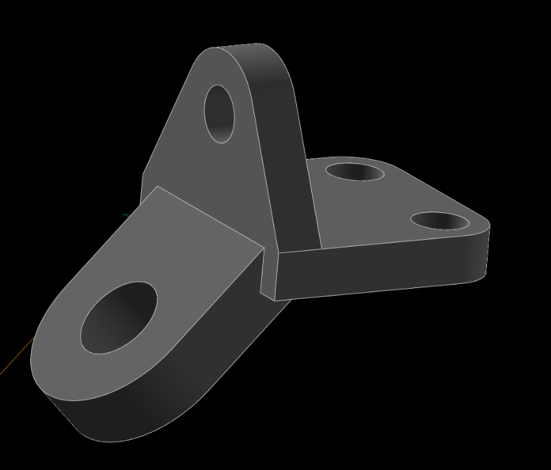
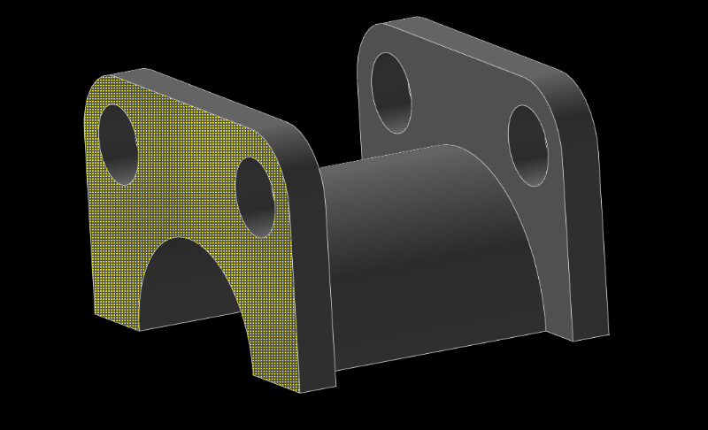
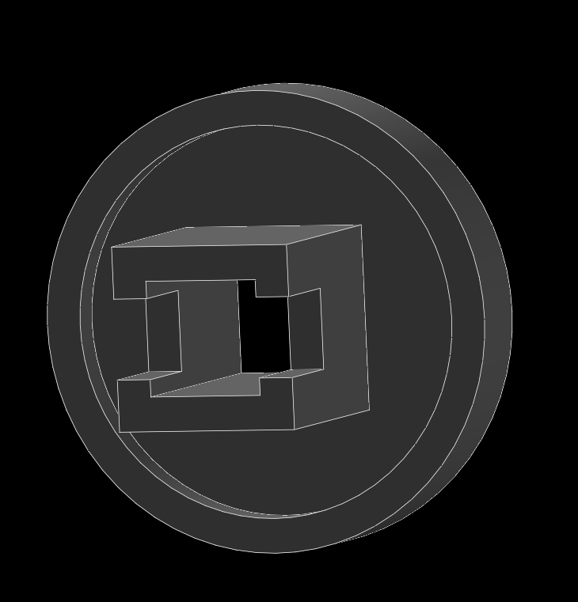
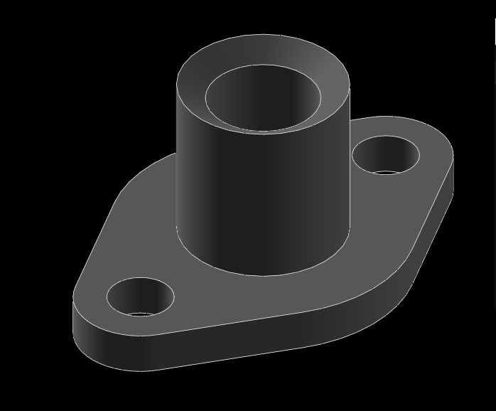
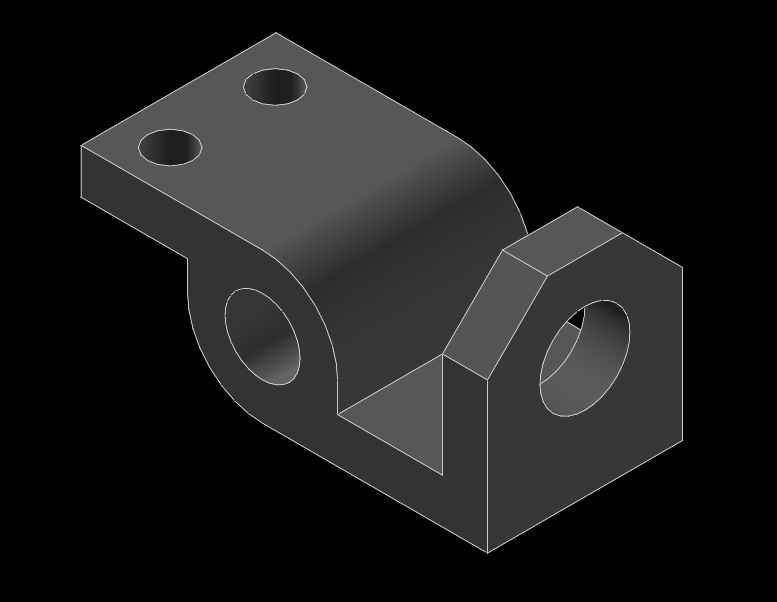
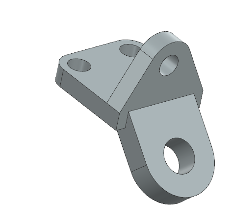
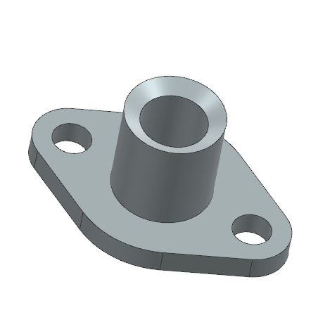

HW1 <<
Previous Next >> HW1_Exam
w7
利用 Solvespace 繪製列表中零件的操作過程與說明影片如下:
影片標題: 國立虎尾科技大學機械設計工程系電腦輔助設計與實習- 作業一之一

所完成的零件檔案下載 parts.zip
影片標題: 國立虎尾科技大學機械設計工程系電腦輔助設計與實習- 作業一之二

所完成的零件檔案下載 Base plate.zip
影片標題: 國立虎尾科技大學機械設計工程系電腦輔助設計與實習- 作業一之三

所完成的零件檔案下載 Bearing block A.zip
影片標題: 國立虎尾科技大學機械設計工程系電腦輔助設計與實習- 作業一之四

所完成的零件檔案下載 Bearing block B.zip
影片標題: 國立虎尾科技大學機械設計工程系電腦輔助設計與實習- 作業一之五

所完成的零件檔案下載 column base.zip
影片標題: 國立虎尾科技大學機械設計工程系電腦輔助設計與實習- 作業一之六

所完成的零件檔案下載 dovetail bracket.zip
影片標題: 國立虎尾科技大學機械設計工程系電腦輔助設計與實習- 作業一之七

所完成的零件檔案下載 dovetail stop.zip
影片標題: 國立虎尾科技大學機械設計工程系電腦輔助設計與實習- 作業一之八

所完成的零件檔案下載 gland blank.zip
影片標題: 國立虎尾科技大學機械設計工程系電腦輔助設計與實習- 作業一之九

所完成的零件檔案下載 gland.zip
影片標題: 國立虎尾科技大學機械設計工程系電腦輔助設計與實習- 作業一之十

所完成的零件檔案下載 Guide plate.zip
影片標題: 國立虎尾科技大學機械設計工程系電腦輔助設計與實習- 作業一之十一

所完成的零件檔案下載 head attachment.zip
影片標題: 國立虎尾科技大學機械設計工程系電腦輔助設計與實習- 作業一之十二

所完成的零件檔案下載 Head yoke.zip
影片標題: 國立虎尾科技大學機械設計工程系電腦輔助設計與實習- 作業一之十三

所完成的零件檔案下載 Rod support.zip
自行練習
sawblade.zip

S-bracket.zip

Sidebeambracket.zip

Slidestop.zip

Slottedlink.zip

Swivel plate.zip

影片標題: 國立虎尾科技大學機械設計工程系電腦輔助設計與實習- 作業一之二
所完成的零件檔案下載
利用 NX2312 繪製列表中零件的操作過程與說明影片如下:
影片標題: 國立虎尾科技大學機械設計工程系電腦輔助設計與實習- 作業一之一

所完成的零件檔案下載 part_ex1.zip
影片標題: 國立虎尾科技大學機械設計工程系電腦輔助設計與實習- 作業一之二

所完成的零件檔案下載 Base plate.zip
影片標題: 國立虎尾科技大學機械設計工程系電腦輔助設計與實習- 作業一之三

所完成的零件檔案下載 Bearing block A.zip
影片標題: 國立虎尾科技大學機械設計工程系電腦輔助設計與實習- 作業一之四

所完成的零件檔案下載 Bearing block B.zip
影片標題: 國立虎尾科技大學機械設計工程系電腦輔助設計與實習- 作業一之五

所完成的零件檔案下載 Column base.zip
影片標題: 國立虎尾科技大學機械設計工程系電腦輔助設計與實習- 作業一之六

所完成的零件檔案下載 Dovetail bracket.zip
影片標題: 國立虎尾科技大學機械設計工程系電腦輔助設計與實習- 作業一之七

所完成的零件檔案下載 Dovetail stop.zip
影片標題: 國立虎尾科技大學機械設計工程系電腦輔助設計與實習- 作業一之八

所完成的零件檔案下載 Gland blank.zip
影片標題: 國立虎尾科技大學機械設計工程系電腦輔助設計與實習- 作業一之九

所完成的零件檔案下載 Gland.zip
影片標題: 國立虎尾科技大學機械設計工程系電腦輔助設計與實習- 作業一之十

所完成的零件檔案下載 Guide plate.zip
影片標題: 國立虎尾科技大學機械設計工程系電腦輔助設計與實習- 作業一之十一

所完成的零件檔案下載 Head attachment.zip
影片標題: 國立虎尾科技大學機械設計工程系電腦輔助設計與實習- 作業一之十二

所完成的零件檔案下載 Head yoke.zip
影片標題: 國立虎尾科技大學機械設計工程系電腦輔助設計與實習- 作業一之十三

所完成的零件檔案下載 Rod support.zip
HW1 執行心得:
第一次使用solvespace畫圖，跟之前使用solidworks完全不一樣，它的作圖過程比較麻煩，像solvespace要做工作面，需要點選上面原本給的面或者選兩條線和一個點做一個工作面，不能直接選擇面，旁邊的功能盤上也沒有像solidworks一次出現許多功能，有些功能是需要自己去尋找，但solvespace可以輸出成stl 檔案，可以直接看到3D圖，連結也用出來了，當時遇到不知道怎麼放上去自己的作業，經過詢問同學和研究老師給的範例，成功放上去，進入作業不需要按連結就可以直接看到作品，拍影片我是用wink3 ，可以截取自己想要的畫面，可以放想放的圖，有一些程式裡面自己的圖案可以用，像線、圈、方框，用一個方框在裡面訴說繪圖過程，讓他人可以看懂過程，後來也使用老師教的shareX ，把整個繪圖過程錄起來，cad2024裡面有許多題目可以練習，一開始可能對這些程式沒那麼上手，經過13張圖的練習外加自己另外練習的，對這些程式更加熟悉，過程速度也加快了，學習新的繪圖程式，增加自己繪圖技能。
HW1 自評分數:
完成上述流程後, 請將 HW1 自評分數輸入 cad2024 自評表單中.
HW1 <<
Previous Next >> HW1_Exam